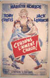
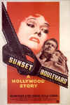
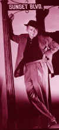
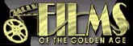

Billy Wilder
(1906-2002)
Nobody's Perfect
By Stu Kobak
March 29, 2002
 
Wilder arrived in Hollywood in the great European
wave of artistic talent fleeing Nazi Germany in the 1930s. Already
established in Germany as a screenwriter, Wilder's limited English
presented a huge obstacle for finding his place in Hollywood, but the
nimble writer made a bond with the language and brought insight and
sophistication to his American screenplays beginning with shared writing
credit on the 1935 Raoul directed Under Pressure.
Wilder began adding magic to movies in 1929. A
career spanning seven decades is remarkable by any standard. Too bad
Wilder chose to put aside his directing chair in 1981. His astonishing wit
might have pried a few more gems from his fertile imagination, but in the
last two decades of his life, the great writer and director elected to
stand on the sidelines. Given the changing Hollywood guard, it's likely
that he may not have been able to make the kinds of films he wanted to
anyway. 
There's a savvy cynical edge to much of Wilder's best
work. Prisoner of War Sergeant Sefton is a survivor that believes in only
one thing: himself. Sefton is the cynical heart of Stalag 17
(1953). A brilliant William Holden delivers Wilder's goods. The great noir
flick Double
Indemnity (1945) crackles with acid-tipped dialogue.
Corruption floats on the plumes of cigarette smoke. In The Big
Carnival (1951) Wilder looks askance at how the press fly in like
vultures to feast on tragic events.
Teamed with writer Charles Brackett from 1938 for
twelve years through the iconic Sunset Blvd., Wilder's other great
writing partner was I.A.L. Diamond with whom he co-wrote eleven movies
beginning in 1957 with Love in the Afternoon.
Wilder positively danced as a
director moving his films with all the nimbleness of an Astaire or the
energy of a Kelly. He could deliver a delicate soufflé of a movie lie Sabrina
(1954) or the underrated Love in the Afternoon (1957), find a way
to capture mixed tones in The Apartment (1960) or even bring
dimension and humanity to a cross-Atlantic flight in Spirit of St.
Louis (1957). Witness for the Prosecution (1957), a
courtroom thriller, found a comic thread in barrister Charles Laughton's
eccentricity while Tyrone Power intentionally exaggerated accused Leonard
Vole's histrionics. One, Two, Three (1961) is one the director's
most frenetic comedy assaults with veteran James Cagney spitting out
dialogue with tap dancing dexterity.
There were misfires especially toward the later stages of his
career. Irma La Douce (1963) is flat-footed and over laden with
stagy production design. With Fedora (1978) Wilder tried to capture
the magic of Sunset Blvd., but a heavily made-up Marthe Keller
fails to conjure an air of mystery and even William Holden's screen
command couldn't pump up this dead horse of a film.
The roster of stars directed by Wilder is
remarkable: Jean Arthur, Humphrey Bogart, James Cagney, Claudette
Colbert, Gary Cooper, Bing Crosby, Tony Curtis, Marlene Dietrich,
Kirk Douglas, William Holden, Jack Lemmon, Audrey Hepburn, Shirley
MacLaine, Dean Martin, Walter Matthau, Marilyn Monroe, Kim Novak,
Tyrone Power, Edward G. Robinson, Ginger Rogers, Barbara Stanwyck, and
James Stewart.
Wilder won the Oscar© for Best Director twice for The
Lost Weekend (1945) and The Apartment (1960) along with Best
Screenplay for Sunset Blvd. (1950). He was nominated a total of 14
times by the Academy as writer and director.
Whether to remember Wilder for his edgy dramatic works
or the wonderful comedies is a toss-up. In all, Wilder was a
creative force in bringing more than a dozen terrific films to the screen
amongst his more than 45 Hollywood credits. Some Like it Hot remains
my favorite Wilder film, but Double Indemnity and Sunset Blvd.
are equally memorable. A belated thanks Billy Film lovers will
forever be indebted to the gifted writer and director for all the
wonderful moments. But Wilder probably would have loved being remembered
for the best closing line of any film ever, "Nobody's perfect!"
in Some Like it Hot. You were pretty close Mr. Wilder.
*Many of Billy Wilder's film have found a home on DVD, yet there are notable exceptions. Wilder's first directing assignment, the delightful comedy The Major and the Minor (1941) is still a DVDMIA. The Big Carnival remains missing as does the lean war film Five Graves to Cairo (1943). Sunset Blvd. is in the planning stages for a Paramount release later this year.
Click on thumbnails for larger images.


Selections from the Feature
Archive include articles on Akira Kurosawa, Frank Darabont, Blonde Bimbos, Hollywood Street Gangs, or Vietnam: The Hollywood Pariah, and many
more....
Film noir: The phrase hangs awkwardly on the tongue, shadowy images peek out from behind half-closed doors. Click on the Noir and Noir Again symbol for a look into the dark spaces of Hollywood's revisiting of film noir.


Manufacturer of computer-video interfaces, switchers, distribution
amplifiers, computer-video scan converters, and high resolution cable.
Found in many high end home theater systems.
Werner Herzog Film
![[ Werner Herzog ]](werner-herzog.jpg)
The Web site of director Werner Herzog includes lots of great material. A
perfect stop for anyone who admires his films.

Home Vision Cinema
Classic and foreign motion pictures on VHS tape. The title
selection is excellent and informative essays are provided for many
of the films.

An on-line Home Theater magazine with excellent hardware reviews,
including thorough and responsible research. Check it out.
 Brad Lang
continues to add more interesting material to the extensive collection at Classic Movies.
Everything from actors and actress to your favorite directors is linked at
the site.
Brad Lang
continues to add more interesting material to the extensive collection at Classic Movies.
Everything from actors and actress to your favorite directors is linked at
the site.
The National Film Preservation Foundation (NFPF) is the
nonprofit organization created by the U.S. Congress to save America's film
heritage.

Films of the Golden Age is
a showcase for special feature articles on film people
and Hollywood history, all illustrated with beautiful photographs and
classic movie art.
 Have you visited
Home Theater
Talk lately? One of the friendliest places on the Net for Home
Theater and DVD discussion, you can get help for installation problems or
simply share your opinions with other Vidiots.
Have you visited
Home Theater
Talk lately? One of the friendliest places on the Net for Home
Theater and DVD discussion, you can get help for installation problems or
simply share your opinions with other Vidiots.
Imaging Science Foundation
The Imaging Science Foundation promotes proper standards in
home theater viewing. ISF trained technicians offer monitor calibration
services to consumers. The difference in a properly calibrated
monitor can be astounding. Click on the image to find an ISF member near
you.

Lady Eve, The (SE) A,C+

Wonderful classic comedy from writer/director Preston Sturges. Henry Fonda
and Barbara Stanwyck star.


The major studio vaults are filled with incredible film treasures which
few have seen the light of DVD.
Open the Vaults